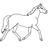

42
Une grande plaine herbeuse se trouve à l'est des collines. Je marche pendant un certain temps sous le soleil mais je suis vite bloqué par un grand précipice infranchissable au sud. Mais un peu plus loin à l'est j'aperçois un troupeau de chevaux sauvages. Des chevaux! Voilà ce qu'il me faut! Je m'approche et j'attends que l'un d'eux se sépare un peu du groupe. Lorsque je vois qu'un des chevaux est seul, je me sers des hautes herbes pour aller tout près de lui. Bon, comment puis-je m'y prendre? Une chose est certaine, je vais devoir être vite! Vite et rusé!
|